GerätSmart Lock · Eingang
StatusAktiv
BatterieOK
ZugriffsprotokollZeit
Testmiete gestartet · Adminhh:mm
Schloss geöffnet (Bluetooth)hh:mm
Miete beendethh:mm
Schritt für Schritt vom alten Schließzylinder zum digitalen Zugang – inklusive Funktionstest in der JUHUU App und Batteriewechsel.
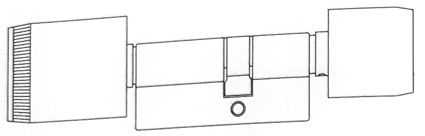
Ihr Smart Lock wurde von JUHUU bereits vorkonfiguriert und in die JUHUU Plattform eingebunden. Sie müssen es nur noch einbauen und testen.
Elektronischer Knaufzylinder, Batterie bereits eingelegt
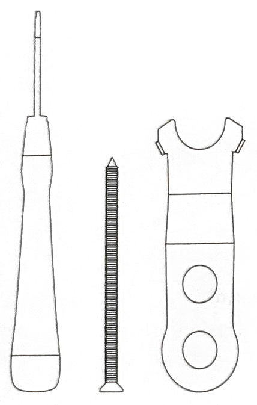
Torx-T6-Schraubendreher, Stulpschraube, Knaufwerkzeug
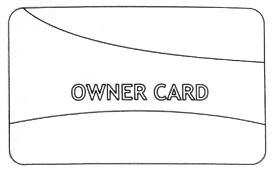
Bereits durch JUHUU registriert – bitte gut aufbewahren
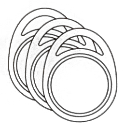
Optional, nur falls bestellt
| Funktechnologie | Bluetooth (BLE) & NFC |
| Schutzklasse | IP65 (wetterfest) |
| Feuerwiderstandsklasse | T90 |
| Batterietyp | CR2 (Li-MnO₂-System) |
| Schließzyklen pro Batterie | 25.000+ |
| Temperaturbereich | −25 bis +65 °C |
| Relative Feuchtigkeit | 20–99 % (nicht kondensierend) |
| Zertifizierung | DIN EN 15684 |
Arbeiten Sie immer bei geöffneter Tür – so können Sie sich nicht versehentlich aussperren.
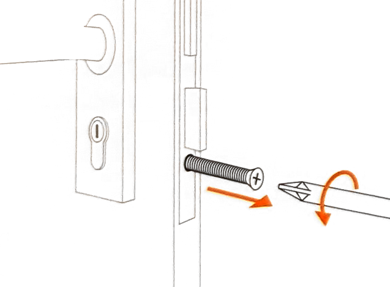
Schraube an der Türkante (Stulp) herausdrehen.
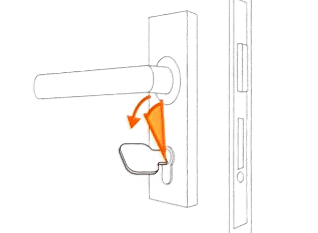
Schlüssel stecken und leicht drehen, bis der Schließbart im Zylinder verschwindet.
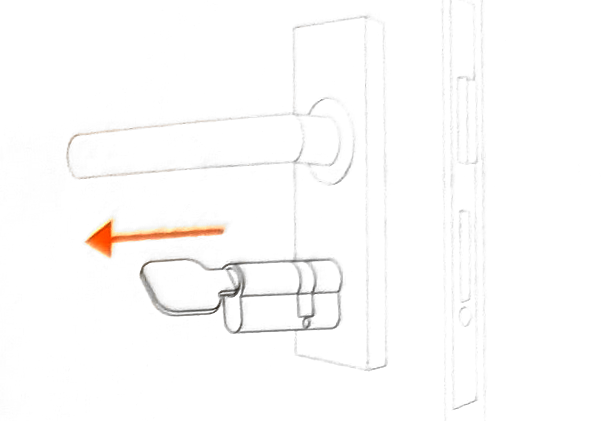
Alten Zylinder am Schlüssel nach außen ziehen.
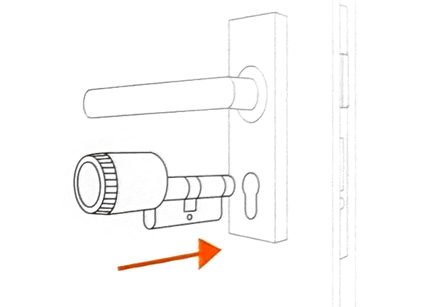
Elektronikknauf zeigt nach außen. Knauf und Batterie sind bereits vormontiert.
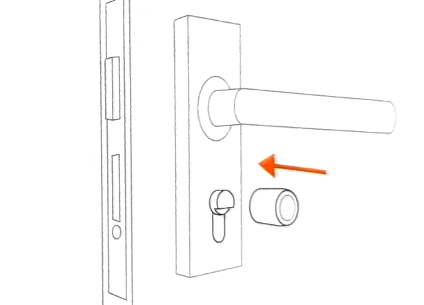
Innenknauf auf der Innenseite auf den Zylinderkörper schieben.
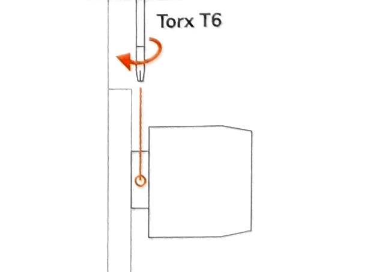
Mit dem beiliegenden Torx T6 fixieren – die Schraube ist bereits vormontiert.
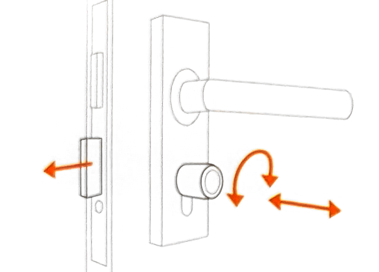
Innenknauf drehen, bis der Riegel ausfährt – so sitzt der Zylinder exakt in Position.
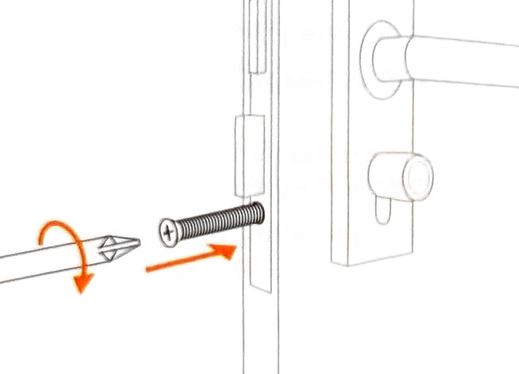
Neue Stulpschraube aus dem Set handfest eindrehen. Nicht überdrehen.
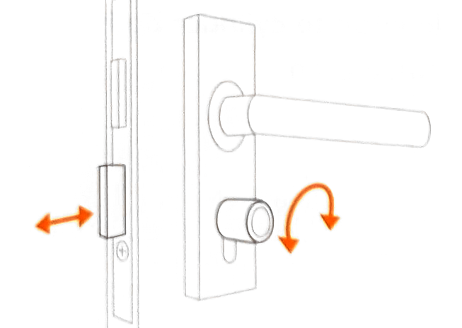
Innenknauf in beide Richtungen drehen: Riegel muss leicht aus- und einfahren.
Kleben Sie den mitgelieferten JUHUU-QR-Code-Aufkleber auf Augenhöhe neben die Tür (außen). Über diesen Code finden Nutzer:innen das Schloss in der App und können es mieten.
So öffnen Nutzer:innen das Schloss – und genau so führen Sie den ersten Funktionstest durch. Halten Sie das Smartphone dabei in der Nähe des Schlosses.
„JUHUU“ im App Store oder bei Google Play laden.
Konto anlegen oder einloggen und Zahlungsmittel hinterlegen.
In der App den Scanner öffnen und den JUHUU-Code neben der Tür scannen.
Tarif wählen, Bedingungen bestätigen und Miete starten.
Die App verbindet sich per Bluetooth mit dem Schloss und schaltet es frei.
Solange freigegeben, den Außenknauf drehen – der Riegel fährt ein, die Tür öffnet sich.
Für Betreiber:innen und Hausverwaltungen: so prüfen Sie im JUHUU Dashboard, dass das Schloss korrekt eingebunden ist, bevor es für Kund:innen freigegeben wird.
Im JUHUU Dashboard Standort öffnen und das Smart Lock auswählen. Gerät-ID / Seriennummer mit dem Etikett am Schloss abgleichen.
Name, Standort, Tarif und Sichtbarkeit in der App kontrollieren. QR-Code an der Tür muss genau zu diesem Gerät führen.
Mit einem Admin- oder Testkonto in der App den QR-Code scannen, Miete starten und „Öffnen“ drücken (siehe Kapitel 03).
Im Dashboard müssen die Testmiete und der Öffnungsvorgang erscheinen. Batteriestatus kontrollieren.
Testmiete in der App beenden und ggf. im Dashboard stornieren, damit keine Kosten entstehen.
Gerät für Kund:innen aktivieren und Abnahme unten dokumentieren.
| Prüfpunkt | OK | Anmerkung |
|---|---|---|
| Zylinder sitzt bündig, Stulp- und Feststellschraube fest | ||
| Riegel fährt per Innenknauf leicht aus und ein | ||
| QR-Code angebracht und führt zum richtigen Gerät | ||
| Öffnen über JUHUU App funktioniert (bei offener und geschlossener Tür) | ||
| Vorgang im Dashboard-Protokoll sichtbar, Batteriestatus OK | ||
| Testmiete beendet, Gerät für Kund:innen freigegeben |
Die Batterie reicht für über 25.000 Schließzyklen. Für den Wechsel brauchen Sie das beiliegende Knaufwerkzeug und eine Original-Ersatzbatterie (CR2, Li-MnO₂-System) – erhältlich über JUHUU.
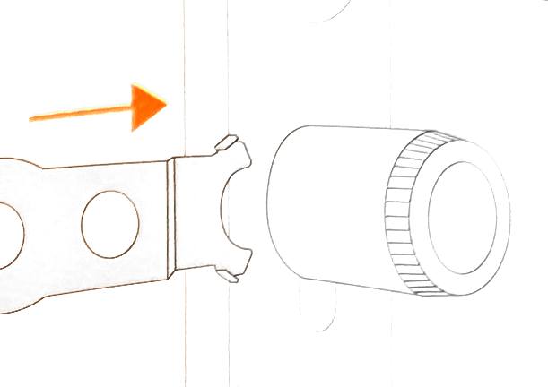
Werkzeug von der Türseite her am Außenknauf ansetzen.
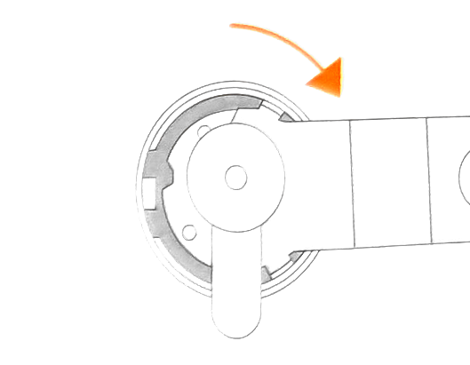
Werkzeug in Pfeilrichtung drehen, um den Bajonettverschluss zu lösen.
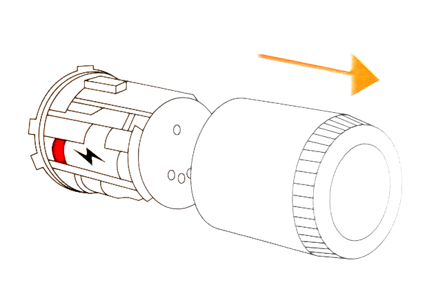
Hülse gerade nach vorne abziehen – die Elektronik wird sichtbar.
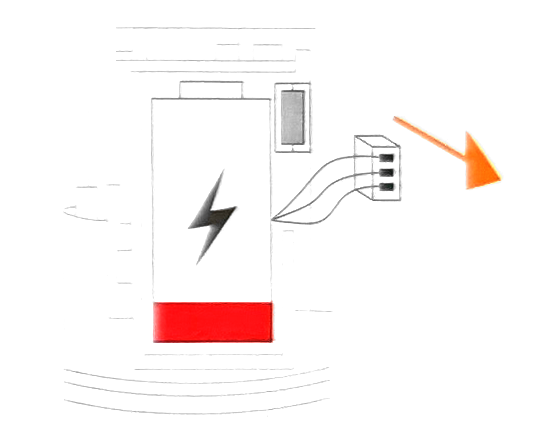
Stecker vorsichtig abziehen und Batterie herausnehmen.
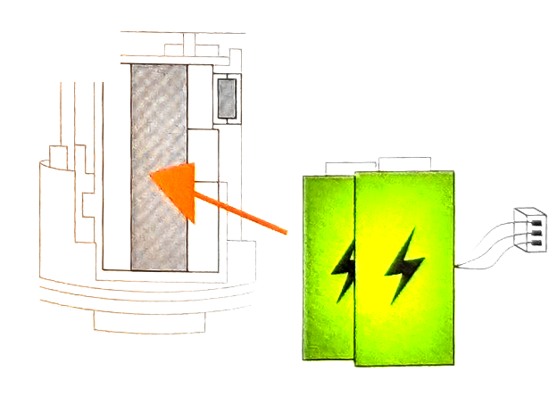
Neue Batterie in das Fach schieben.
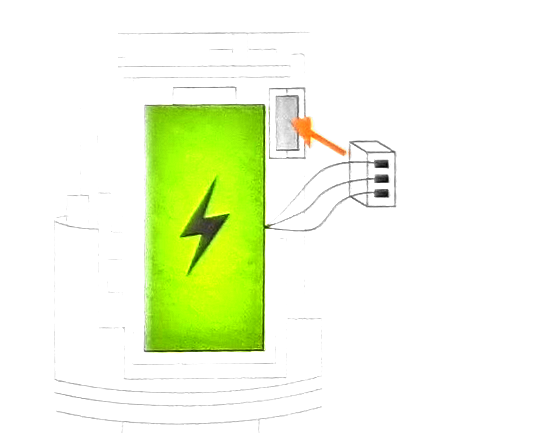
Batteriestecker wieder einstecken – auf festen Sitz achten.
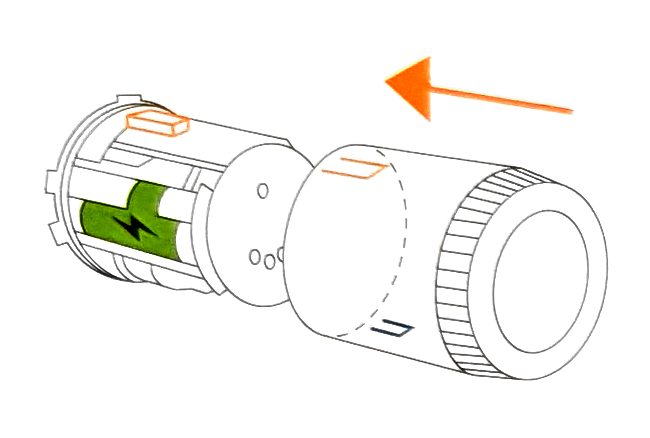
Nur eine Position ist möglich – die Mitnahmenocken sind unterschiedlich breit.
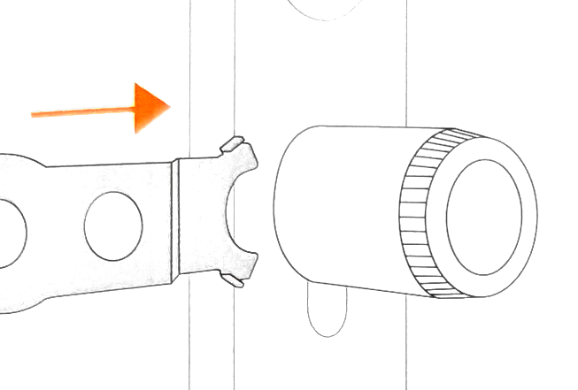
Werkzeug wie in Schritt 1 erneut ansetzen.
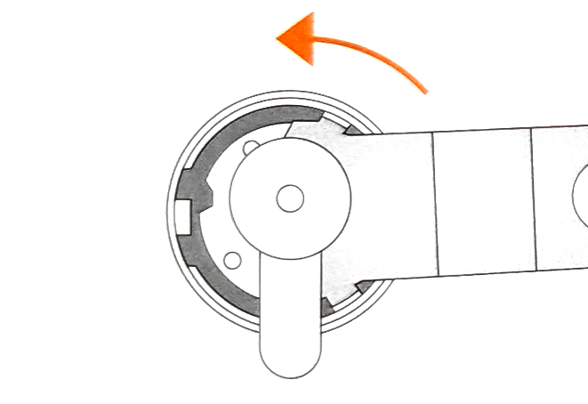
Werkzeug gegen die Pfeilrichtung aus Schritt 2 drehen, bis der Knauf fest sitzt.
Nicht in die Hände von Kleinkindern (0–3 Jahre) – verschluckbare Kleinteile. Gerät nicht öffnen oder verändern, außer für den Batteriewechsel.
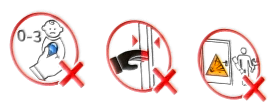
Vor dem Berühren der Elektronik an einem geerdeten Gegenstand entladen (ESD). Einbau bei geöffneter Tür.
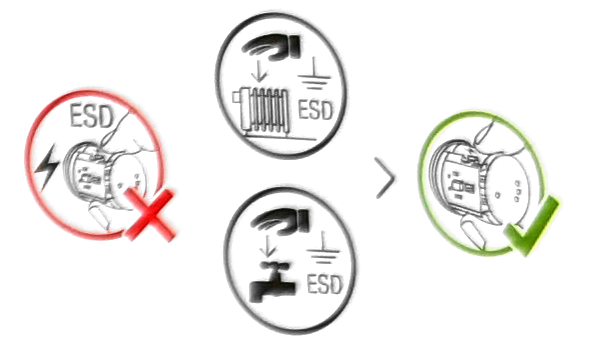
Den Knauf nur drehen – nicht zum Zuziehen der Tür oder als Griff verwenden.
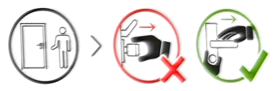
Nicht in Wasser tauchen, keine Hochdruck- oder Lösungsmittelreiniger. Nur mit einem feuchten Tuch abwischen.
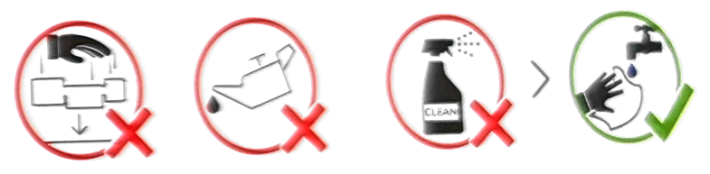
Trocken lagern, vor Nässe schützen und innerhalb des zulässigen Temperaturbereichs aufbewahren.
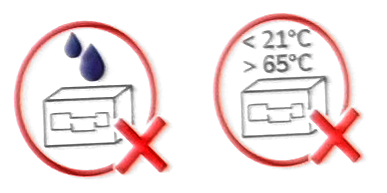
CE · DIN EN 15684 · IP65 · T90
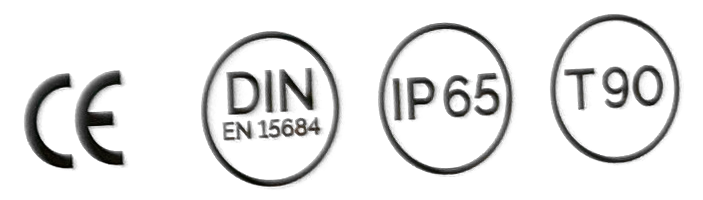
| App findet das Schloss nicht / verbindet nicht | Bluetooth & Standort aktivieren, näher ans Schloss gehen, App neu starten. Prüfen, ob die Miete aktiv ist. |
| Außenknauf dreht durch | Normal, solange das Schloss nicht freigegeben ist. Erst „Öffnen“ in der App drücken, dann drehen. |
| Riegel klemmt oder fährt schwer | Zylinderposition prüfen, Stulpschraube nicht zu fest anziehen, Tür auf Verzug prüfen. |
| QR-Code wird nicht erkannt | Code sauber halten, ausreichend Licht. Alternativ das Schloss in der App über die Karte/Suche finden. |
| Hinweis „Batterie schwach“ | Batterie wie in Kapitel 05 beschrieben tauschen. |
Illustrationen: Tapkey GmbH, Herstelleranleitung Tapkey Smart Lock. Weitere Sicherheitshinweise des Herstellers: tapkey.com/sicherheit.